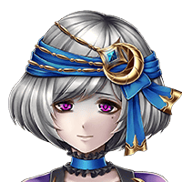

シリウスお兄さま…… 結局、戻ってきませんでしたわね……。
フェリーネ
おそらく、これ以上待っても時間の無駄。 私は先に向かうことにしますわ。
父上が姿を消したと噂で聞きました。 まさか、もう……！？
セルヴィア
……安心しろ。 父上なら、まだこの城内におられる。
シリウス
そうですか……。 間に合ってよかった……。
セルヴィア
……そもそも、あの噂自体、 私が流したものだ。
セルヴィア
さて、時間は十分に与えた。 貴様の出した答えを聞かせてもらおうか。
セルヴィア
民を救えるものであれば、 私も救ってやりたい……！！
セルヴィア
我々は皇族だ！ 国を守らずして、何を守るというのだ！？
セルヴィア
私たちは民衆を見捨てることを 選択するわけではない……。
セルヴィア
歴代の皇帝たちが死守してきた このバリウラ帝国の未来を守るため……
セルヴィア
残された選択肢の中から、 最善のものを選ぶのだ……。
セルヴィア
必ず……憎き神軍を滅ぼすために 私たちはこの場所に戻ってくるつもりだ。
セルヴィア
そしてその後は、 帝国を復興させてみせる……！！
シリウス
私は、父上…… そして、姉上に付いていきます……。
セルヴィア
……もはや時間は残されていない。 すぐに向かうぞ。
シリウス
どのような経緯にせよ、民たちを見殺しに してしまうことになってしまった……。
シリウス
だが、どれだけ時間がかかろうが、 必ず民たちの遺志を継いでみせる……。
ミューゼ
シリウスお兄様が王城に入っていくのが 見えたから……。
ミューゼ
でも、お兄様たちの様子を見ていれば 分かるわ……。


ミューゼ
約束して……？ また、戻ってくるって……。
サレアス
神軍のヤツら……。 ここまでしつこいなんて……。
ドゥーレ
大丈夫……だ……。 こんなところでやられたりはしない……。
ドゥーレ
戦うんだ、サレアス！ まだ俺たちの任務は終わっていない！
敵がどんどん集まってくる……。 このままでは……！！
ベルデッド
ええ……民のためにも、 ここで倒れるわけにはいかないからね。
ベルデッド
ああ、これね。 帝国に伝わる腕輪、オドルワンスよ。
ベルデッド
セルヴィア姉さんが、 フェリーネを使いに出して、
ベルデッド
なんでこのタイミングで渡してきたのか、 よく分からないけどね……。
ラジア
私、セルヴィア姉様から、 その腕輪について聞いたことがあるわ……。
ラジア
ベルデッド姉様…… 私がここの敵を引き付けます！
ラジア
その隙に突破口を開き、 民とともに帝都から脱出してください！
ラジア
このままでは、私たちは神軍に包囲される だけです。
ベルデッド
ふざけないで……！ あなたを残して行けるわけがないでしょ！！
ラジア
私は、私が守りたいもののために、 この提案をしているのです！
ラジア
ベルデッド姉様が、今、守りたいのは 何ですか！？
ラジア
ベルデッド姉様は、民を安全なところまで 導いてあげてください。
ラジア
私もむざむざ 神軍にやられるつもりはありません。
ラジア
包囲を突破できたら、必ずベルデッド姉様の もとに向かいますわ。
ラジア
少し前まで、私たち兄妹は いがみ合うことしかできなかった……。
ラジア
なのに、今はこうして民を助けるという １つ目的で協力し合ってるんですもの……。
ラジア
そして……私もドゥーレ兄様と同じ、 捨石となる道を選んでいる……。
ラジア
でも、悪い気分じゃないわ……。 兄様もきっと同じ思いだったのね……。
ラジア
ですが、ベルデッド姉様には……。 バリウラの民には指一本触れさせませんわ！
ラジア
お父様が研究していた この悪魔の石を使ってでも！！
ミューゼ
シリウスお兄様……。 この国は……今日、滅ぶわ……。
ミューゼ
だから、私は……私たちは…… 最後の時まで、この国の民とともに……。
それから数時間後……帝都バリウラは神軍の手に堕ち、バリウラ帝国はグランガイアから姿を消した。
第三皇女ベルデッドは、生き残った民を連れて神軍の包囲網を突破。その後、平民を装って民とともに新天地を目指す一団に加わったという……。
異界に渡ったバリウラ皇帝、そして第一皇子シリウスたちは、神軍と対抗すべき力を得るため、その地に棲まう神獣に戦いを挑む。
しかし、結果は敗北……。バリウラ皇帝も深手を負い、遂にはこの世を去ってしまう……。
その後、シリウスはその異界の地で神獣と共存する道を選択。第四皇女ミューゼとのグランガイアに戻る、という約束は最期まで果たせなかったという……。


{kind=link}
{kind=link}
{kind=link}
{kind=link}
{kind=link}
{kind=link}
{kind=link}
{kind=link}